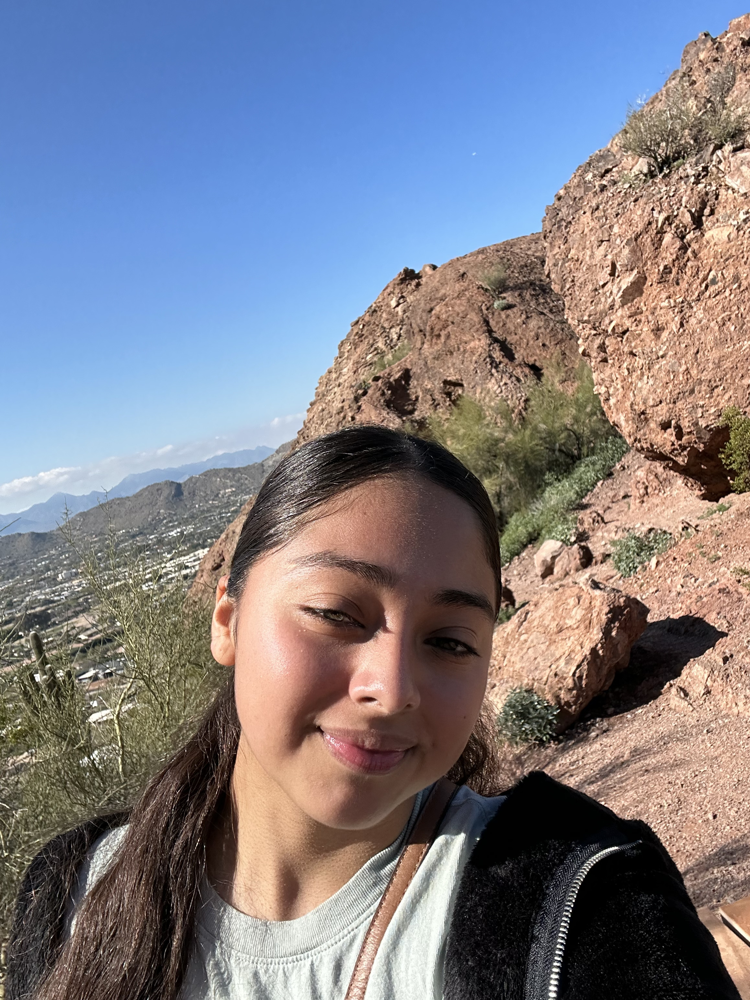
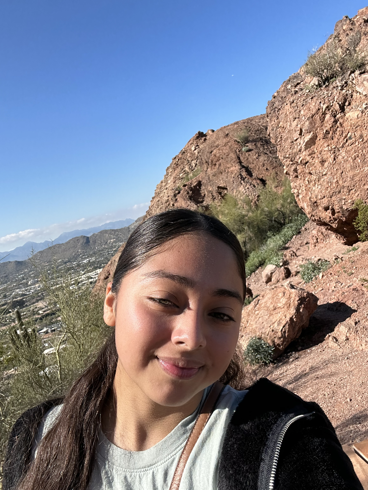

Hi I'm Blanca Gonzalez Osorio!
Hi Everyone! My name is Blanca Gonzalez Osorio, and I am 21 years old. I’ve always grown up watching superhero movies — but it hasn’t always been Marvel. The very first superhero show I got into was The Flash, and from there I fell in love with the entire Arrowverse. That’s really where my love for all things superheroes began.
Despite loving superheroes, I had never watched Marvel at all until COVID hit. I’m the kind of person who has to watch things in order, so I knew I couldn’t dive into Marvel unless I started from the very beginning. COVID gave me the perfect chance to deep dive into the Marvel Cinematic Universe — and I haven’t looked back since!
Ever since then, I’ve kept up with everything Marvel: the movies, the Disney+ shows, and even some of the older Marvel-related films like X-Men. It’s been an amazing journey, and this site is my way of sharing that excitement with you. Below are some photos of myself and things I like to do. I hope you enjoy reading my reviews of all Marvel films!.
 
